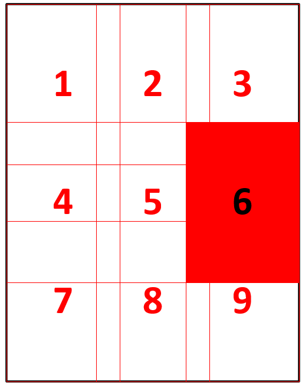
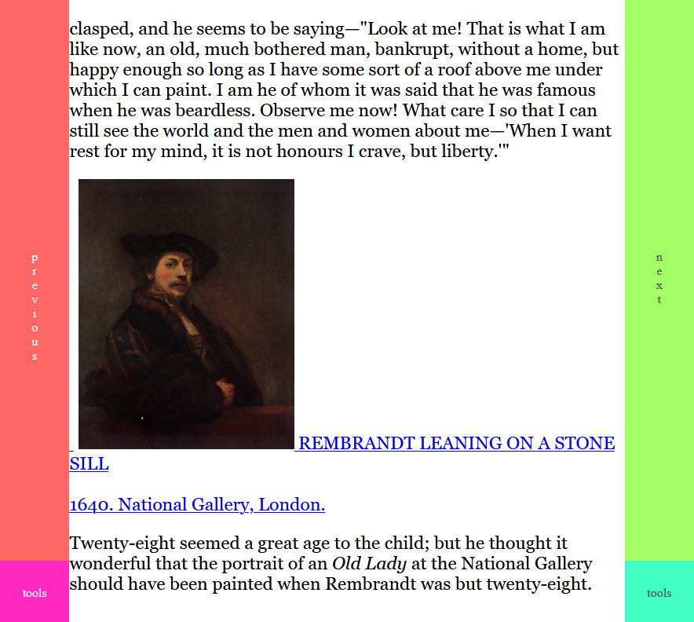

In the last couple if months I've spent some of my time on a very specific project: develop a web-based cross-device comic, and eventually ebook, reader app than gives me access to my comics and books collection from anywhere. After many hours of implementation and testing, the project is a success and it is released here.
A very important part of the experience of reading comics on a web-app are the controls. They must be simple, minimalistic, and intuitive. It's also important for the controls to be adapted to the device used to read the comic. When on a mobile or tablet device, users interact with a web page using their finges, and there is already a natural array of gestures that get used everywhere, pinch gestures for zooming, panning for moving objects on screen. On a desktop computer, a mouse is used most of the time, sometimes the keyboard. I have implemented support for both kinds of devices and tested and tuned their usage over several weeks.
In the end, I have settled on the following functionality set as the optimum choice for creating a good experience with the app:
If the whole page fits into the screen, this gesture will move us between pages. If the page is zoomed in and a full page does not fit into the screen, this gesture will take us to the next or previous part of the screen that is not currently visible. The application is currently designed for western media, so the reading order is assumed to be left to right, top to bottom. A zoomed in page can be considered to be composed of multiple views, as presented in the image below.

The next and previous gestures move users between these views. When the top-left view is displayed, the previous gesture will move to the previous page, and similar with the bottom-right view moving to the next page.

The controls for these gestures are on the left and right edges of the screen, as shown in the above image. Clicking with the mouse, a left click, or tapping the areas with your fingers on a mobile device will move you between views and pages.
The UI for the controls is built from the following DIVs: prev and next representing the areas triggering the previous and next gestures, the tools bottons, placed on both the left and side of the screen, and a central area named canv which will be the trigger area for some of the gestures detailed in the next sections.
<div id="prev"></div>
<div id="next"></div>
<div id="toolsButtonLeft"></div>
<div id="toolsButtonRight"></div>
<div id="canv"></div>
The distribution on page of the UI is done with CSS, using the following code:
#prev, #next, #toolsButtonLeft, #toolsButtonRight, #canv {
display: block;
position: fixed;
}
#prev {
top: 0;
left: 0;
width: 10vw;
height: 90vh;
}
#next {
top: 0;
right: 0;
width: 10vw;
height: 90vh;
}
#toolsButtonLeft {
bottom: 0;
left: 0;
width: 10vw;
height: 10vh;
}
#toolsButtonRight {
bottom: 0;
right: 0;
width: 10vw;
height: 10vh;
}
#canv {
top: 0;
left: 10vw;
width: 80vw;
height: 100vh;
}
Gestures are enabled on our elements with the following javascript:
enableGesturesOnElement(document.getElementById("prev"), {
"clickAction": (x, y) => goToPreviousView(),
"doubleClickAction": zoomJump,
"mouseMoveAction": mouseGestureDrag,
"scrollAction": mouseGestureScroll,
"pinchStartAction": touchGesturePinchStart,
"pinchAction": touchGesturePinchOngoing,
"panAction": touchGesturePan
})
enableGesturesOnElement(document.getElementById("next"), {
"clickAction": (x, y) => goToNextView(),
"doubleClickAction": zoomJump,
"mouseMoveAction": mouseGestureDrag,
"scrollAction": mouseGestureScroll,
"pinchStartAction": touchGesturePinchStart,
"pinchAction": touchGesturePinchOngoing,
"panAction": touchGesturePan
})
The previous and next actions are controlled through the click action, but some other actions, related to zooming and panning, are defined on these elements as well. This is done to provide the largest possible action area for touch gestures.
function goToNextView() {
if (isEndOfRow()) {
if (isEndOfColumn()) {
goToNextPage()
} else {
setImageLeft(getNextPosition(getImage().width, getViewportWidth(), getImageLeft(), getHorizontalJumpPercentage(), getRowThreshold()))
setImageTop(getNextPosition(getImage().height, getViewportHeight(), getImageTop(), getVerticalJumpPercentage(), getColumnThreshold()))
updateImage()
}
} else {
setImageLeft(getNextPosition(getImage().width, getViewportWidth(), getImageLeft(), getHorizontalJumpPercentage(), getRowThreshold()))
updateImage()
}
}
function isEndOfRow() {
return (getImage().width <= getViewportWidth()) || approx(getImageLeft() + getImageWidth(), getViewportWidth(), getRowThreshold())
}
function isEndOfColumn() {
return (getImage().height <= getViewportHeight()) || approx(getImageTop() + getImageHeight(), getViewportHeight(), getColumnThreshold())
}
function getNextPosition(imageDimension, viewportDimension, imageValue, viewportJumpPercentage, threshold) {
if (approx(imageValue, viewportDimension - imageDimension, threshold)) return 0
var proposedNextPosition = (imageValue - viewportDimension * viewportJumpPercentage) | 0
if (proposedNextPosition < viewportDimension - imageDimension) return viewportDimension - imageDimension
return proposedNextPosition
}
function approx(val1, val2, threshold = 1) {
return Math.abs(val1 - val2) < threshold
}
When moving to the next view, we check if we are at the end of a rown and at the end of a column. If both conditions are true, it's time to load and display the next page. Otherwise, the image is moved on the screen so the next view in the current image is displayed. If we don't have to change the row, only the left position of the image is changed, otherwise both the top and the left positions are adjusted. getNextPosition is a generalized method to compute the next vertical or horizontal position based on the dimensions of the image, the viewport dimension (height or width of the screen) and the current position of the image. All computations include a threhold, this allows a move to a next position even when the right edge of the screen is not necessarily in view and improves the user experience. We have similar methods for the previous gesture.
function enableGesturesOnElement(element, actions) {
enableTouchGestures(
element,
actions.pinchStartAction,
actions.pinchAction,
actions.pinchEndAction,
actions.panAction,
actions.panEndAction
)
element.addEventListener("wheel", (event) => mouseWheelScroll(event, actions.scrollAction, actions.scrollEndAction))
element.addEventListener("mousedown", mouseDown)
element.addEventListener("mouseup", (event) => mouseUp(event, actions.clickAction, actions.doubleClickAction, actions.tripleClickAction))
element.addEventListener("mouseout", mouseUp)
element.addEventListener("mousemove", (event) => mouseMove(event, actions.mouseMoveAction))
}
The code that enables gestures on an element will add different event listeners to monitor what events are getting triggered on the element. For the previous and next actions, we are monitoring mouse clicks (which also capture tap gestures on mobile devices).
function mouseDown(event, callback) {
if (event.button == 0) {
//event.preventDefault()
gestures.mouseDownX = event.clientX
gestures.mouseDownY = event.clientY
gestures.mousePressed = true
if (callback) callback(event.clientX, event.clientY)
}
}
function mouseUp(event, clickAction, doubleClickAction, tripleClickAction) {
if (event.button == 0) {
gestures.mousePressed = false
if (gestures.mouseDownX == event.clientX && gestures.mouseDownY == event.clientY) {
// the mouse did not move, it's a click
click(event, clickAction, doubleClickAction, tripleClickAction)
}
}
}
function click(event, clickAction, doubleClickAction, tripleClickAction) {
event.preventDefault()
var timestamp = + new Date()
gestures.clickTimestamp.push(timestamp)
delayed(function() {
if (gestures.clickTimestamp.length > 2) {
gestures.clickTimestamp = []
if (tripleClickAction != null) tripleClickAction(event.clientX, event.clientY)
} else if (gestures.clickTimestamp.length > 1) {
gestures.clickTimestamp = []
if (doubleClickAction != null) doubleClickAction(event.clientX, event.clientY)
} else if (gestures.clickTimestamp.length > 0) {
gestures.clickTimestamp = []
if (clickAction != null) clickAction(event.clientX, event.clientY)
}
gestures.clickTimestamp.shift()
})
}
function delayed(callback) {
window.setTimeout(callback, 250)
}
A simple click is the mouse button being pressed and released without the mouse moving. If multiple clicks happen within a time threshold, we have double and triple clicks. Counting the number of clicks is achieved by using a queue. When a click is registered, the timestamp when that click was registered is pushed to the queue. Then a delayed task is triggered which checks the number of timestamps in the queue. Depending on that number, we have a simple, a double or a triple click. The queue is cleared after a click is processed. In practice, we don't use the triple click functionality because it would make using the app too complicated. The double click is used for the zoom functionality and discussed in its section.
Keyboard gestures are enabled with the following javascript:
enableKeyboardGestures({
"upAction": () => pan(0, getViewportHeight() / 2),
"downAction": () => pan(0, - (getViewportHeight() / 2)),
"leftAction": goToPreviousView,
"rightAction": goToNextView
})
function enableKeyboardGestures(actions) {
document.onkeydown = function(e) {
if (e.keyCode == '38' || e.keyCode == '87') {
// up arrow or w
if (actions.upAction) actions.upAction()
}
else if (e.keyCode == '40' || e.keyCode == '83') {
// down arrow or s
if (actions.downAction) actions.downAction()
}
else if (e.keyCode == '37' || e.keyCode == '65') {
// left arrow or a
if (actions.leftAction) actions.leftAction()
}
else if (e.keyCode == '39' || e.keyCode == '68') {
// right arrow or d
if (actions.rightAction) actions.rightAction()
}
}
}
Zooming is a simple concept, it will allow the user to increase the size of the image and see more details, as well as read the text easier. The minimum zoom for a page depends on the size of the page, when the whole page fits the screen, the viewport, the image can't be zoomed out anymore. The application does not currently have a maximum zoom value. If you have a mouse, you can zoom in or out with the scroll wheel. On a device with a touch screen, the pinch gesture can be used to zoom the page. Another gesture in the zoom section is a double click or double tap. This gesture will fit the page to screen, if the page is zoomed in. If the page is already fit to screen, the double click gesture will zoom in to a specified level.
function zoomJump(x, y) {
if (isPageFitToScreen()) {
zoom(getZoom() * 2.5, x, y)
} else {
fitPageToScreen()
}
}
function isPageFitToScreen() {
return getZoomForFitToScreen() == getZoom()
}
function getZoomForFitToScreen() {
return Math.min(getViewportHeight() / getOriginalImageHeight(), getViewportWidth() / getOriginalImageWidth())
}
function fitPageToScreen() {
setZoom(getZoomForFitToScreen())
updateImage()
}
How the double click is handled is described in the previous section. The functinoality for deciding if we zoom in or fit the page to screen is presented in the code above. Each page has a specific zoom value for it to fully fit on the screen. When we want to fit a page to screen, we just have to compute that zoom value and apply it to the page.
function enableTouchGestures(element, pinchStartAction, pinchAction, pinchEndAction, panAction, panEndAction) {
disableEventHandlers(element)
var hammertime = new Hammer(element, {domEvents: true})
hammertime.get('pan').set({ direction: Hammer.DIRECTION_ALL, threshold: 0 });
hammertime.get('pinch').set({ enable: true });
var panStartX = null
var panStartY = null
var panPreviousDeltaX = 0
var panPreviousDeltaY = 0
var pinching = false
var pinchCenterX = null
var pinchCenterY = null
hammertime.on('pinchstart', function(ev) {
ev.preventDefault();
pinching = true
pinchCenterX = ev.center.x
pinchCenterY = ev.center.y
if (pinchStartAction) pinchStartAction(ev.center.x, ev.center.y)
})
hammertime.on('pinch', function(ev) {
ev.preventDefault()
var currentZoom = ev.scale
if (pinchAction) pinchAction(currentZoom, pinchCenterX, pinchCenterY)
var currentDeltaX = ev.deltaX - panPreviousDeltaX
var currentDeltaY = ev.deltaY - panPreviousDeltaY
if (panAction) panAction(currentDeltaX, currentDeltaY)
panPreviousDeltaX = ev.deltaX
panPreviousDeltaY = ev.deltaY
});
hammertime.on('pinchend', function(ev) {
panPreviousDeltaX = 0
panPreviousDeltaY = 0
if (pinchEndAction) pinchEndAction(ev.scale, pinchCenterX, pinchCenterY)
})
hammertime.on('panstart', function(ev) {
if (! pinching) {
panStartX = ev.center.x
panStartY = ev.center.y
}
})
hammertime.on('pan', function(ev) {
if (! pinching) {
var currentDeltaX = ev.deltaX - panPreviousDeltaX
var currentDeltaY = ev.deltaY - panPreviousDeltaY
if (panAction) panAction(currentDeltaX, currentDeltaY)
panPreviousDeltaX = ev.deltaX
panPreviousDeltaY = ev.deltaY
}
})
hammertime.on('panend', function(ev) {
if (! pinching) {
panPreviousDeltaX = 0
panPreviousDeltaY = 0
var dx = panStartX - ev.center.x
var dy = panStartY - ev.center.y
if (panEndAction) panEndAction(dx, dy)
}
// a pinch always ends with a pan
pinching = false
})
}
Gestures for mobile devices are configured with the help of the Hammer JS library. This library lets us configure pinch and pan gestures. When pinching we must save the center of the pinch gesture (a mean of all the points that are part of the pinch gesture). Then, as the fingers move on the screen, we can trigger the pinch event with the pinch center and the current scale. This scale is computed relative to the original positions of the fingers of the screen. While pinching, a pan can also happen, so the pan action is also triggered. This has to actually be handled when the pan events are triggered. To obtain the desired behavior, we must activate a flag when the user starts pinching, if a pan happens while pinching, handle the pan action through the pinch event and not the pan event, and finally turn the pincing flag off at the end of a pan, because the version I am using of the Hammer JS library is always finishing a pinch event with a pan event as well.
function touchGesturePinchStart(pinchCenterX, pinchCenterY) {
document.originalZoom = getZoom()
}
function touchGesturePinchOngoing(currentZoom, pinchCenterX, pinchCenterY) {
zoom(document.originalZoom * currentZoom, pinchCenterX, pinchCenterY)
}
function zoom(zoom, centerX, centerY) {
var sideLeft = centerX - getImageLeft()
var ratioLeft = sideLeft / (getImageWidth() * getZoom())
var newSideLeft = (getImageWidth() * zoom) * ratioLeft
setImageLeft(centerX - newSideLeft)
var sideTop = centerY - getImageTop()
var ratioTop = sideTop / (getImageHeight() * getZoom())
var newSideTop = (getImageHeight() * zoom) * ratioTop
setImageTop(centerY - newSideTop)
setZoom(zoom)
updateImage()
}
The pinch start ation needs to save the current zoom of the page. This is because the scale of a pinch is a relative scale, so when zooming we must multiply that scale with the original zoom of the image at the beginning of a pinch. Applying the zoom on the page also takes into account the center of the pinch gesture, and keeps that center in the same place on the screen if possible.
Panning the page, moving it around freely with your mouse or finger, may be the simplest gesture discussed here. It just implies setting the left and top position of the image on the screen.
function pan(x, y) {
setImageLeft(getImageLeft() + x)
setImageTop(getImageTop() + y)
updateImage()
}
function updateImage() {
var img = getImage()
if (getZoom() < getMinimumZoom()) setZoom(getMinimumZoom())
var newWidth = getOriginalImageWidth() * getZoom()
var newHeight = getOriginalImageHeight() * getZoom()
setImageWidth(newWidth)
setImageHeight(newHeight)
var minimumLeft = (newWidth < getViewportWidth()) ? (getViewportWidth() / 2) - (newWidth / 2) : Math.min(0, getViewportWidth() - newWidth)
var maximumLeft = (newWidth < getViewportWidth()) ? (getViewportWidth() / 2) - (newWidth / 2) : Math.max(0, getViewportWidth() - newWidth)
var minimumTop = (newHeight < getViewportHeight()) ? (getViewportHeight() / 2) - (newHeight / 2) : Math.min(0, getViewportHeight() - newHeight)
var maximumTop = (newHeight < getViewportHeight()) ? (getViewportHeight() / 2) - (newHeight / 2) : Math.max(0, getViewportHeight() - newHeight)
if (getImageLeft() < minimumLeft) setImageLeft(minimumLeft)
if (getImageLeft() > maximumLeft) setImageLeft(maximumLeft)
if (getImageTop() < minimumTop) setImageTop(minimumTop)
if (getImageTop() > maximumTop) setImageTop(maximumTop)
}
A more interesting subject to discuss here is the updateImage method, whics is used in all previous actions. This method applies all the requested changes to the image size and position, but not before making sure that the image is within the limits we expect, keeping at least part of the image on screen at all times; users can't pan the image out of the screen and end up with a completely blank page, or zoom the image out so much that it becomes invisible. The minimum and maximum allowed positions are computed in this method and, if the image changes would exceed these positions, the image is reset to the corresponding minimum or maximum, depending on which of the two have been exceeded.
For any other functionality we want on this page, this functionality will be accessed through a menu. We want to keep the main functionality, accessible through gestures, as limited as possible. A minimalist design should make the learning curve for using the app pretty flat. The menu can be accessed by clicking on the lower-left or on the lower-right corner of the screen, with a mouse or with your finger.
Depending on what side of the screen you clicked, the menu will be aligned along that side. This design decision makes the menu easy to use indifferent of the hand you hold your device in, for a mobile device. For a desktop, the menu will be close to the point on the screen that was clicked to open the menu, again making the menu easy to use.
The menu displays some additional information, the name of the comic book, the collection that the comic book is part of, the current page and the total number of pages in the comic. The separation between elements that are just information and those that can be clicked is made through a very simple color scheme, with clickable elements being golden. Clicking the collection take the user back to the library page and display all comics that are part of that collection. The user can jump to any page in the comic from this menu, switch the app to full screen, go back to the library page (without displaying the collection) or deleting the progress information for this comic. Clicking anywhere on the transparent gray area of the screen will close the menu and take users back to the comic page they were reading. All this interaction has again been designed to have the minimum amount of functionality that makes this useful but not too cluttered.
An important part of the design and implementation process was the testing. I've tested the applicatio on multiple browsers, desktop and mobile devices. The original feature set was richer, used more controls. The original action to open a menu was a right-click on desktop, which translated to a long click on mobile. But when testing this on the iPad I found out there is no such thing as a right click on the available browsers, so I had to go back to the drawing board and design a different way of accessing the menu. In a similar manner, the library page of the application, which is not discussed here, originally had more complex functionality that allowed users to select multiple books in the library and remove the progress information from that page. But limitations across devices led to me removing that functinality, moving it to the menu for each comic. But these limitations may prove useful, forcing me to rethink the array of gestures users need to learn and leading to a more streamlined application and, I believe, a better overall user experience.